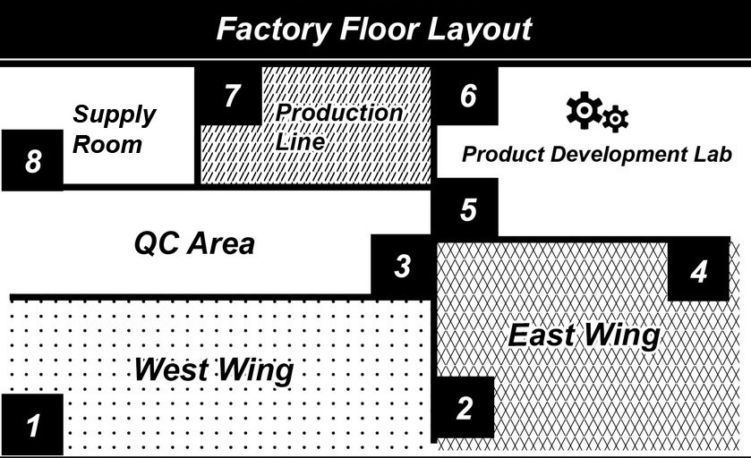

Questions 1 through 3 refer to the following conversation: 00:00 00:00 00:47 |
| Woman: How was your weekend, Miguel? Man: I was busy running errands and preparing for today's meeting. Woman: Too busy to show up for the event? Man: What do you mean? Woman: You missed Yvette's party. Man: Oh, yeah, I forgot. Anyway, I check my email every day but didn't see anything about her party. Woman: Take a quick look at your junk folder. Man: Here it is. When did she change her email address? Woman: About a month ago. She posted her new one on her wall. Man: No wonder! I almost never use social media sites. Woman: You're too old fashioned Miguel. Man: Maybe you're right. I should check my account a bit more often. 女： 你的週末過得如何，Miguel？ 男： 我忙著處理瑣事跟準備今天的會議。 女： 忙到不來參加活動嗎？ 男： 你是指什麼？ 女： 你錯過了Yvette的派對。 男： 喔，對啊，我忘了。我每天檢查我的電子郵件可是根本沒有看到任何關於派對的的事。 女： 看一下你的垃圾郵件資料夾。 男： 喔！在這裡。她什麼時候改了她的電子郵件地址？ 女： 大約一個月前。她把新的地址貼在她的社群網站頁面上。 男： 怪不得！我幾乎從來不用社群網站的。 女： 你太老古板了Miguel。 男： 哈，或許妳是對的。我應該更常檢查我的帳號一些。 重要單字及片語 errand n. 差事 junk n. 垃圾 folder n. 資料夾 invitation n. 邀情信 productive adj. 成果豐碩的 delete v. 刪除 media n. 媒體；大眾傳播媒介 prepare for為…作準備 ex. He intends to stay up all night to prepare for the midterm exam. 他打算熬夜一整晚為期中考作準備。 too… to 太…而不能 ex. The bicycle is too big for a child to ride. 對一個小孩來說，這台腳踏車太大而沒辦法騎。 show up 出席；出現 ex. The bride didn't show up at the wedding ceremony. 結婚典禮上新娘並沒有出現。 no wonder 難怪 ex. No wonder the child fell down; he kept spinning around in circles! 難怪這個小孩會跌到，他一直在轉圈圈。 |
Questions 4 through 6 refer to the following conversation:
00:00 00:00 00:39 |
|
| M: Wendy, did you hear the big news? W: About Mrs. Kamineski? M: Yeah. Kai Feng already told me. I can't believe she is resigning! She's been working here for over 20 years. W: Yeah, she's been my manager since I started here. M: Any idea who will replace her? W: Rumor has it they are going to hire externally. M: That's too bad. I though Donald Allen would get it. W: Really? He's been here a long time, but I don't think he is a suitable choice. M: Why not? W: He's good at what he does, but he's not a natural leader. 男：Wendy，你有沒有聽到那個大新聞？ 女：關於Kamineski太太的嗎？ 男：對阿。凱方已經告訴我。我不敢相信她辭職！她已經在這裡工作了20多年。 女：是啊，從我開始在這上班她就一直是我的主管了。 男：你知道誰將會取代她嗎？ 女：有傳言說他們會從外部招聘。 男：這太糟糕了。我以為會是Donald Allen。 女：是嗎？他一直在這裡很久了，但我不認為他是一個合適的選擇。 男：為什麼不呢？ 女：他對他的工作很在行，但他不是一個天生的領袖。
|
Questions 7 through 9 refer to the following conversation:  00:00 00:00 00:38 |
| W: Hi, Brent. Listen, we've made some changes to the proposed layout of the new factory, and need you to update the floor plan design as soon as possible. M: Sure. What changes were made? W: Are you looking at the plan right now? M: Yes, I've got it right in front of me. W: Do you see the staircase between the west wing and quality control area? M: Yes. W: That's going to be moved to the back. M: Where exactly at the back? W: On the top, at the left side of the main production line. M: Right next to the supply room, right? W: Exactly. 女：嗨，Brent。聽著，我們對要提出的新工廠設計圖做了一些修改，需要你盡快更新平面配置圖。 男：當然。做了什麼樣的變更？ 女：你現在正在找計劃書嗎？ 男：是的，它就在我的面前。 女：你有看到西翼和品管區之間的樓梯嗎？ 男：有。 女：那將會被移到後面。 男：後面確切位置是哪裡？ 女：在頂端，主生產線的左側。 男：補給室右邊，對吧？ 女：沒錯。 |
Questions 10 through 12 refer to the following conversation: 00:00 00:00 00:37 |
| Man: What seems to be the problem? Woman: It's hard for me to say at this early stage. It could be one of several different things. Man: What should I do? Woman: We'll have to run some tests today to try to narrow it down. Man: What kind of tests? Woman: We'll need to take a blood sample. Please take this form and go and report to the blood drawing area. Man: When should I come and see you again? Woman: Come back in a week. We should have your test results by then. In the meantime, I'll prescribe you a cream to apply to the affected area twice daily. 男： 問題似乎出在哪裡？ 女： 現在這個階段要下結論還太早。它有可能是幾件不同的事情中的一個。 男： 那我該怎麼做？ 女： 我們今天得進行一些測試來縮小範圍。 男： 什麼樣的測試？ 女： 我們需要採集血液樣本。請拿著這張單子到驗血處報到。 男： 我應該什麼時候再來找你？ 女： 一個禮拜內回診。到時候我們應該已經有你的檢驗結果了。目前，我會開一條軟膏給你用來一天兩次塗抹在患處。 重要單字及片語 seem v. 看起來好像；似乎 stage n. 階段 blood n. 血液 prescribe v. 開藥 cream n. 軟膏 affected adj. 被疾病侵襲的 draw v. 汲取；抽 narrow down減少；縮小 ex. The police have narrowed down the search area because they've found some new evidence. 警方因為找到新的證據而縮小搜尋範圍。 apply to 適用於 ex. The new school regulation only applies to new students. 這條新的校規只適用於新學生。 plastic surgery整形外科 ex. He needs to see a plastic surgery specialist to remove the burn scars from his face. 因為他要移除臉上的燒燙傷疤而需要去看整形外科醫生。 |
Questions 13 through 15 refer to the following conversation: 00:00 00:00 00:44 |
| Man: Can I try these on? Woman: Sure, but there's a maximum of five items allowed in the changing room. Man: Can I leave these other two with you? Woman: Just put them on that empty rack over there. I'll make sure nobody grabs them. Man: Great! By the way, do you carry cargo shorts? Woman: There might be a few on the clearance rack near the back. Man: Is there anything wrong with them? Woman: Not at all. They're just out of season. There are some great deals to be had but limited sizes available. Man: Yes, that makes sense. I'll check those out. Woman: Call for me when you want to try on the other items! Man: Will do. 男： 我可以試穿這幾件嗎？ 女： 當然可以，不過更衣室最多只能帶五件進去。 男： 我可以把其他這兩件放在你這裡嗎？ 女： 把它們放在那邊的空架子上就可以了。我不會讓人把它拿走的。 男： 好極了！對了，妳們有工作短褲嗎？ 女： 靠近後面的清倉特賣架上可能有幾件。 男： 它們有什麼問題嗎？ 女： 完全沒有。它們只是過季商品而已。有些非常划算可是剩沒多少尺寸可以選擇。 男： 有道理。我會看一下。 女： 您想試穿其他件時就叫我一下！ 男： 我會的。 重要單字及片語 Maximum n. 最大限度 Rack n. 架子 Grab v. 拿；抓取 Cargo n. 貨物 Short n. 寬鬆運動短褲 Clearance n. 清倉；出清 Limited adj. 有限的；不多的 Available adj. 可得到的；可買的到的 Retailer n. 零售店 try on 試穿 ex. Please try on this shoe, so that I can know if it is the right size. 請試穿這隻鞋以便我可以知道尺寸是不是對的。 changing room 更衣室 ex. All changing rooms are occupied at the moment. 所有的更衣室目前都在使用中。 not at all 一點都不 ex. When he asked me if I'd be interesting in gambling, I replied, "not at all.". 當他問我是否對賭博有興趣時，我回答"一點也不"。 out of season 過季的；非當季的 ex. I don't mind if the product is out of season, I just want it quickly. 我並不介意產品是否為過季品，我只想趕快拿到。 |
Questions 16 through 18 refer to the following conversation: 00:00 00:00 00:49 |
| Man: Sara, have you heard the big news? Woman: Yes, Mr. Amir was promoted to regional manager. Man: I think we both have a decent shot at moving up the ladder. Woman: You're too kind, Steve. I doubt they'd consider me. Man: Are you kidding me? Your numbers have been incredible recently; you sold fourteen properties last month! Woman: Yes, but you've been here much longer than me and have an amazing knowledge of the city. Man: Are you calling me old? Woman: Ha ha! I guess I'd better watch myself. By the way, those tips about how to run an open house were really helpful. Man: Glad to be of service. Remember us little guys after you've climbed to the top. 男： Sara，妳聽說那條大新聞了嗎？ 女： 有啊，Amir先生被提拔為區經理。 男： 我覺得我們兩個都很有機會晉升。 女： 你過獎了，Steve。我不覺得他們會考慮我。 男： 妳在開玩笑嗎？ 妳最近的銷售業績難以置信的好；妳上個月賣出了十四筆房地產！ 女： 是沒錯，可是你在公司服務的時間比我久，並且對這個城市瞭若指掌。 男： 妳是在說我老嗎？ 女： 哈哈，我想我還是少說話。對了，這些關於如何經營待售房屋的訣竅真的很有幫助。 男： 很高興幫得上妳的忙。等妳升了官可要記得提拔我們這些底下的小人物喔。 重要單字及片語 promote v. 晉升 regional adj. 地區的 decent adj. 可接受的；相當好的 doubt v. 懷疑；不相信 consider v. 考慮 incredible adj. 難以置信的 property n. 房地產 wholesaler n. 批發商 well-liked adj. 狀況良好的；被賞識的 move up 提升 ex. It's not possible to move up in this company's hierarchy without working here for at least ten years. 沒有在這間公司待超過十年以上是不可能被提升的。 by the way 順便一提 ex. By the way, I will buy some bread on my way home. 順便一提，在回家路上我會買一些麵包。 open house 待售房屋 ex. We should visit the open house before we consider buying an apartment in this complex. 在我們考慮要購買這棟大樓的公寓前，我們應該去看看開放參觀的房屋。 real estate agency 房地產經紀公司 ex. Let's step into this real estate agency and check out the prices in this neighborhood. 我們走進房產公司來察看這個地區的房價。 |
Questions 19 through 21 refer to the following conversation: INVENTORY LIST, FRIDAY, SEPT 19
00:00 00:00 00:39 |
||||||||||||
| W: Hi, Mr. Tam. What did you need to see me about? M: Hello Linda. I need you to delegate a few new responsibilities to your team members. W: Sure. What are they? M: First, Eric is now going to be in charge of creating inventory lists. W: OK. Are they still to be completed once per week on Fridays? M: Yes. Second, I want Terry to take over product ordering. W: Sure. Is he still in change of receiving orders as well? M: No, Nicholas will now be doing that. W: OK, I will tell them at once. 女：嗨，Tam先生。你有什麼事需要見我呢？ 男：Linda你好。我需要你委派給你的團隊成員一些新的任務。 女：好的。是什麼呢？ 男：首先，現在起將由Eric負責創建庫存清單。 女：OK。是否仍然於每週的星期五完成？ 男：是的。其次，我要Terry接管產品訂購。 女：好的。是否也還是由他負責接收訂單？ 男：不，現在起將由Nicolas來做。 女：好的，我會立即告訴他們。 9月19日 星期五 庫存清單
|
Questions 22 through 24 refer to the following conversation: 00:00 00:00 00:53 |
| Man: Pipe Dreams, how can I help you? Woman: Hi there. My toilet is clogged. I've tried flushing it several times but it just keeps flooding. Man: First of all, don't try flushing it anymore. How's the water level now? Woman: It has gone down a bit but it's still quite high. Man: Have you tried using a plunger? Woman: Sure, but it's no use. Man: I'm just eating lunch. It'll probably take me a few hours to get there. Woman: Is there anything else I could try in the meantime? Man: Try adding some bleach and waiting a few minutes. After that you can try plunging it again. Woman: I'll give it a shot. Man: If that fails, give me a call and I'll be over as soon as possible. Woman: Great, thanks! 男： 這裡是瞬通水電, 有什麼我能為你服務的？ 女： 你好。我的馬桶塞住了。我試著沖了幾次，可是水一直溢出來。 男： 首先，別再一直嘗試沖馬桶了。現在的水位如何？ 女： 有消了一點但還是很高。 男： 你有試過用馬桶吸盤嗎？ 女： 當然，可是沒有用。 男： 現在是我的午餐時間。我可能要好幾個小時才能到你那裡。 女： 在這段時間內有什麼其他方法我可以嘗試嗎？ 男：加些漂白水後等個幾分鐘試試看。之後你可以試著再通一次。 女：我會試試看。 男： 如果失敗了，打個電話給我，我會盡快趕過去。 女： 太棒了，謝謝！ 重要單字及片語 clog v. 堵塞；塞滿 flush v. 用水沖洗 flood v. 溢出 plunger n. 馬桶吸盤 bleach n. 漂白劑 janitor n. 清潔工 carpenter n. 木匠 plumber n. 水管工 first of all 首先 ex. First of all, you have to promise that you won't make the same mistake again. 首先，你必須承諾你不會再犯同樣的錯。 in the meantime 在…期間內；同時 ex. Can you unlock the door, please? In the meantime, I'll go get the luggage from the car. 你可以幫我開門嗎？同時，我會去車裡拿行李。 give it a shot 試試看；放手一搏 ex. Give it a shot and see what you can make. 放手一搏並且看看你能做什麼。 |
Questions 25 through 27 refer to the following conversation: 00:00 00:00 00:39 |
| Woman: I'm sorry, sir. I can't find any flights on the day you requested within your price range. Man: What if I wanted to travel in September instead of August? Would that be cheaper? Woman: Yes. September is not peak travel season so it should be a little bit cheaper. I can check for you now if you have time to wait. Man: Yes, that sounds good. I have this afternoon off work so I have time. Woman: Would you like a cup of coffee while you wait? Man: No, thank you. A glass of water would be nice if it's not too much trouble. Woman: Certainly, sir. 女： 我很抱歉，先生。您要求的那個日期我找不到任何在您價格區間的班機。 男：那如果我改成九月出發而不是八月？這樣會比較便宜嗎？ 女： 會的。九月不是旅遊旺季，所以應該會稍微便宜一些。如果你有時間可以等的話，我現在可以幫你查一下。 男： 好的，聽起來不錯。我今天下午不用上班所以我有時間等你。 女： 您想邊等邊喝杯咖啡嗎？ 男： 不用了，謝謝妳。如果不是太麻煩的話，一杯白開水就可以了。 女： 沒問題，先生。 重要單字及片語 peak adj. 高峰的 certainly adv. 沒問題 agency n. 代辦處 instead of 代替；而不是 ex Instead of studying in your office all day, why don't you go for a walk? 你何不去散散步，而不是在辦公室坐一整天？ recover from 自疾病或異常狀態恢復 ex. She is still recovering from a failed relationship. 她正從失戀復原中。 |
Questions 28 through 30 refer to the following conversation: 00:00 00:00 00:45 |
| Man: Congratulations! I heard you made partner. Woman: Thanks, it seems like just yesterday I was taking the Bar exam. Man: You really earned it. You took on a lot of tough cases this year. Woman: Thanks, your legal expertise played a big role in my success. I think you would have made a fine choice as well. Man: We should grab a drink to celebrate. Woman: I'd love to but I have to be in court early tomorrow and have a lot of work to get done. Man: Come on! One quick drink won't kill you. Woman: Okay, we'll see. I might be able to slip out for a bit if I can finish working on my opening statement. Man: Sounds good, I'll leave you to it then. 男： 恭喜！我聽說妳成為合夥人了。 女： 謝謝，我參加律師資格考試彷彿還只是昨天的事而已。 男： 這是妳應得的。妳今年接了許多棘手的案子。 女： 謝謝，你的法律專業在我的成功路上扮演了很重要的角色。我覺得你也會成為一個不錯的公司合夥人的。 男： 我們應該喝一杯慶祝一下。 女： 我很樂意，可是我明天一大早得出庭，而且還有許多工作得完成。 男： 得了吧！只喝一杯不會礙事的！ 女： 好吧，再說吧。如果我可以把我的開審陳述做完，我可能可以溜出去一下。 男： 聽起來不錯，那我不打擾你了。 重要單字及片語 partner n. 夥伴；合夥人 expertise n. 專門知識 opening n. 開場；開頭 statement n. 陳述 bartender n. 酒保 colleague n. 同事 uncertain adj. 不確定的 take on承擔；接受 ex. If you want this position, you will have to take on a whole new set of responsibilities. 如果你想要這個職位，你就要承擔所有新的責任。 slip out 溜出來 ex. I'll take advantage of the lunch break to slip out for a while. 我會利用午餐時間溜出來一下。 |
Questions 31 through 33 refer to the following conversation: 00:00 00:00 00:45 |
| Woman: I'm sorry, Mr. Adams. The reason that you have not received your order is because we currently don't have the shoes in the size you requested. Man: But I ordered those shoes last month. Why did I have to call you in order to be notified? Woman: I'm sorry sir, but it's the company policy not to divulge personal information by any means other than over the telephone. Hence we could not inform you by post or by email. Man: But I don't understand. What personal information do you need to reveal by telling me you don't have my shoes in stock? Woman: Your shoe size is considered personal information, sir. Would you like me to put you through to our complaints department? 女： 我很抱歉，Adams先生。您尚未收到訂單內容的原因是因為我們目前沒有您所要的尺寸的鞋子。 男： 可是我上個月就訂了這些鞋子。為什麼我非得打電話給妳才告知我這件事呢？ 女： 先生我很抱歉，但公司規定除了透過電話不得以任何方式揭露個人資料。因此我們不能以一般郵件或電子郵件通知您。 男： 可是我不懂。告訴我妳庫存裡沒有我要的鞋子會需要妳透露什麼個人資訊？ 女： 您鞋子的尺寸被視為是個人資訊，先生。您要我幫您轉接我們的客訴部門嗎？ 重要單字及片語 currently adv. 現在 notify v. 通知 divulge v. 洩漏 hence adv. 因此 reveal v. 洩漏 complaint n. 抱怨 in order to 為了 ex. In order to save money, he ate instant noodles every day for three months. 為了要存錢，他每天吃泡麵吃了三個月。 in stock 有現貨或存貨 ex. We don't have this pattern in stock, because it sold out last week. 這個花樣我們並沒有庫存，因為上個禮拜賣光了。 |
Questions 34 through 36 refer to the following conversation: 00:00 00:00 00:59 |
| Woman: How much for that silver one you're standing beside? Man: I'm asking for 23,000 but I'll let you guys have it for 21,000. Man2: How many does it seat? Man: A maximum of nine passengers. It's also very fuel efficient. Man2: How many kilometers does it have on it? Man: Only 40,000; it's in excellent condition. Woman: That's quite a lot of mileage. Do you think we might have problems with it like we did with the last van, Frankie? Man2: It's hard to say… I could be convinced if the price were a little lower. Man: Just so you know, I've inspected it myself. On top of that we back up all of our vehicles with a ninety-day guarantee. We'll cover any repair costs if you discover something wrong with it. Woman: Drop it by another two thousand and we'll sign the papers right now. Man: I guess I can do that. Man2: Then you have yourself a deal. 女： 你旁邊的那部銀色的要多少錢？ 男： 我要賣二萬三千美金，可是我可以用二萬一千美金賣給妳。 男2： 可以坐幾個人？ 男： 最多九名乘客。而且非常省油。 男2： 跑多少公里了？ 男： 只有四萬公里；狀況極佳。 女： 這英哩數相當多。你覺得就像我們會像上一台廂旅車一樣有問題嗎，Frankie？ 男2：很難講…如果價格再低點我就可以被說服。 男： 要跟你說一聲。我親自檢查過了。除此之外，我們的車子提供九十天的售後保固。如果妳發現什麼地方有問題的話，我們會負責一切的修理費用。. 女： 再降個兩千美金我就馬上簽約。 男： 我想可以。 男2：： 那我們成交了。 重要單字及片語 silver adj. 銀色的 fuel n. 燃料 efficient adj.效率高的 kilometer n. 公里 excellent adj. 極好的；傑出的 downside n. 不利；缺點 inspect v. 檢查 guarantee n. 保證；保固 repair n. 修理 used adj. 舊的；二手的 van n. 箱型車 dealership n. 經銷權 warranty n. 保證書 estimate n. 估價 mechanic n. 技師 ask for 要求 ex. The audience demanded that the performer get off the stage. 觀眾要求表演者下台。 back up 支持；備用 ex. My father backed up my little brother's decision. 我的父親支持我小弟的決定。 pay for 為…付錢；為…付出代價 ex. The troublemaker has to pay for what he's done. 肇事者要為他所做的付出代價。 |
Questions 37 through 39 refer to the following conversation: 00:00 00:00 00:53 |
| Man: Priority Parcels. How may I help you? Woman: Hi, I'd like to inquire about a package I sent a few days ago. Man: Sure, could you please give me the tracking number? Woman: It's GH23079. Man: According to my database the package is scheduled to arrive tomorrow morning. Woman: I paid extra to guarantee delivery within 48 hours. Man: Yes, I see that. Unfortunately, the ice storm that swept through the east coast led to delays. Rest assured that you will only be charged for a standard delivery. Woman: I appreciate that correction but the prompt delivery was absolutely crucial. I will require further compensation. Man: I'm not authorized to do that. I'll put you through to my supervisor. Woman: Very well then. 男： 這裡是速可達貨運公司。有什麼我能為您服務的嗎？ 女： 你好，我想查詢我幾天前寄出的一個包裹。 男： 沒問題，可以請您給我貨品追蹤號碼嗎？ 女： 號碼是GH23079。 男： 根據我的資料庫顯示，這個包裹預定明天早上送到。 女： 我多付了錢保證會在四十八小時內送到。 男： 是的，我知道。不幸的是，橫掃東岸的暴風雪造成了運送延誤。請您放心，您只會被收取標準運送的費用。 女： 感謝你的更正，可是準時送達絕對是最重要的。我要求進一步的補償。 男： 我沒有得到授權可以這麼做。我會將您的電話轉給到我的主管。 女： 好的。 重要單字及片語 inquire v. 查詢；詢問 track v. 追蹤 schedule v. 安排；預定 guarantee v. 保證；擔保 unfortunately adv. 不幸地 sweep v. 襲擊；席捲 appreciate v. 感激；感謝 correction n. 更正 prompt adj. 準時的；迅速的 absolutely adv. 絕對地 crucial adj. 重要的 compensation n. 補償；賠償 authorized adj. 經授權的 draw v.作出；得到 plea v. 懇求；請求 according to 根據 ex. According to our company records, your transaction wasn't successful. 根據我們電腦紀錄，你的交易並沒有成功。 rest assured 放心 ex. You can rest assured that the typhoon will not affect our crops. 你可以放心颱風不會影響到我們的農作物。 deal with 處理 ex. Please continue to handle the customer's issue until I return. 我回來之前請繼續處理顧客的問題。 |